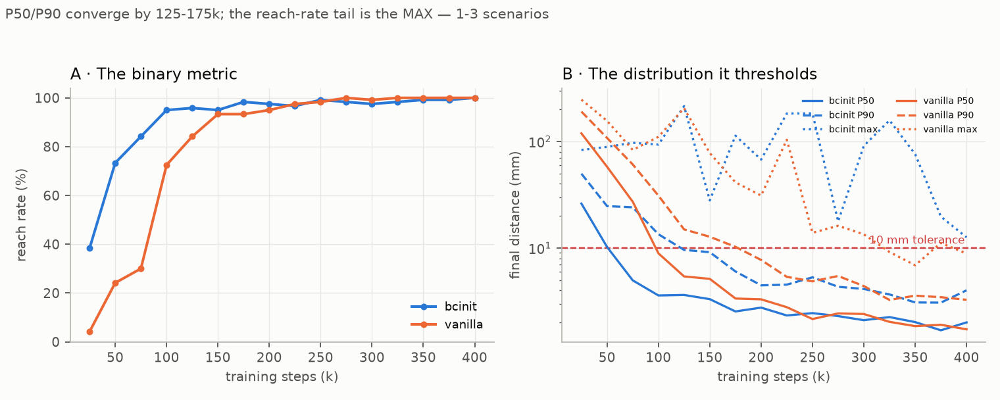
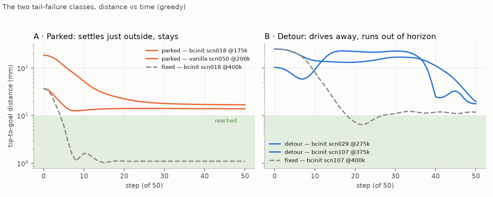
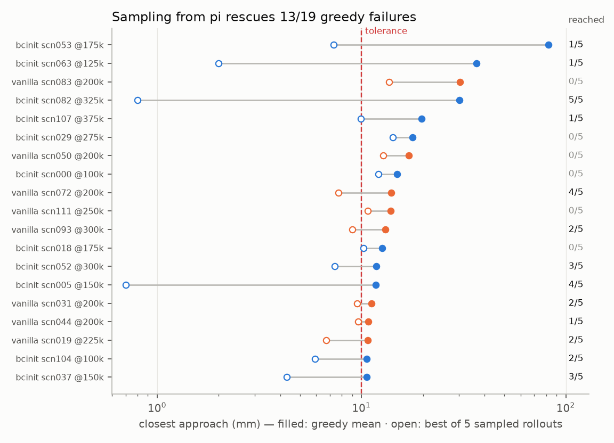
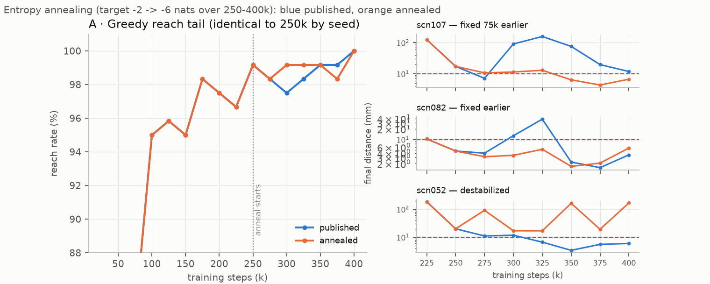

16. The reach-rate tail — parked means, threshold churn, and what entropy annealing proves¶
Decision¶
The 95→100% stretch of both Reacher RL arms' reach-rate curves is not slow learning and did not deserve a training fix. Per-scenario re-evaluation of every late checkpoint shows P50/P90 of final distance converge by 125–175k steps; everything the reach-rate plot renders as a long tail is 1–3 individual scenarios flickering across the 10 mm threshold. The failures come in two classes with different causes and different fixes, and the entropy- annealing experiment run to test the dominant class confirmed its mechanism causally while being a net wash as a training change — so annealing ships as an opt-in flag with its measured result, not as a default, and the reporting convention changes instead: checkpoint sweeps report final-distance percentiles alongside reach rate.
Context¶
The warm-start arm of 16 is where this surfaced: its
sweeps, and journey 13's before them, read naturally
as "bcinit needs
~300k steps to close the last 5%; vanilla needs far less" — bcinit sits at
114/120 from 100k and only prints 120/120 at 400k. That framing treats the
tail as a learning problem. Before fixing it, we re-ran the 120 frozen
scenarios on every tail checkpoint of both arms keeping the per-scenario
rows (scripts/sweep_checkpoints_perscn.py — the aggregate-only sweep of
journey 13 is exactly what hid this), plus per-step traces of all 19 failing
episodes.
The anatomy — two failure classes, neither of them "hasn't learned yet"¶

Panel B is the finding: P90 final distance crosses the 10 mm tolerance at ~125k (bcinit) / ~175k (vanilla) and sits at 3–5 mm from 200k on — bcinit ahead of vanilla the whole way, so by the continuous metric the warm start is never slower; the sample-efficiency win of journey 10 is real in millimetres, not just in the binary metric. The entire reach-rate tail lives in the max — the single worst scenario — bouncing between 18 and 183 mm from checkpoint to checkpoint. Borderline scenarios flip pass/fail as SAC updates jiggle the mean action (scn052 passes at 250k, fails at 300k), so the tail is churn, not progress.

The 19 failing tail episodes (bcinit ≥100k: 11 scenarios; vanilla ≥200k: 8), traced per step:
| class | count | signature | goal geometry |
|---|---|---|---|
| parked | 14/19, all 8 of vanilla's | correct elbow fold (|q1| at closest approach matches IK within a few degrees), one approach, then a stationary point 11–31 mm out, flat to the horizon, torques ≈ 0 | mixed radii |
| detour | bcinit only: scn029/052/107 | drives the tip away first (103 → 215 mm mid-episode), plunges late, 50-step horizon expires with best distance at literally the last step | 33–46 mm from base, elbow folded to 150–160°, near its ±172° soft limit |
Two more measured facts. Every bcinit failure is an upper-half-plane goal and every vanilla failure lower-half — arm-specific directional blind spots, mechanism unidentified. And the detour trio is a regression, not inheritance: the clone solves scn052 and scn107 at 3.9/4.6 mm best; SAC training broke working clone behaviour on the fragile near-base scenarios and spent ~300k steps re-fixing it. The genuinely-inherited clone failures (scn029/082/005, clone near-misses at 12–30 mm) were fixed quickly.
The mechanism — the greedy mean lags its own distribution¶
Why would a policy park 14 mm out when the reward charges −dist every step
and a 100-point-per-step bonus sits 4 mm away? Because nothing in SAC ever
optimizes the mean action. The actor loss is E[Q(s, a)] over samples; if
the action distribution straddles the bonus cliff, the expectation is
satisfied with the mean outside it. The MLP critic smooths the cliff, so the
gradient at the mean is gentle — and α's auto-tuning holds the policy at −2
nats forever, so the mean-vs-samples gap never closes on its own. Evaluating
deterministic=True then asks a question training never answered.

The probe: each failing episode re-rolled 5× with deterministic=False —
same weights, same scenario, sampling instead of the mean. 13/19 failures
reach, some emphatically (scn082: mean parks at 30 mm, samples reach 5/5
with best 0.8 mm), and every non-rescued episode still gets closer. Meanwhile
the training monitors show both arms' stochastic behaviour policy reaching
essentially 100% of episodes from ~225k — the competence was always there;
the greedy summary of it is what the sweep measures.
The experiment — entropy annealing, a causally clean test¶
If the parked offsets are the mean lagging a deliberately-wide distribution,
shrinking the distribution should convert them. AnnealTargetEntropyCallback
(rl/sb3.py) ramps target_entropy linearly −2 → −6 nats over 250k–400k
(train_reacher_window.py --anneal-entropy-from 250000); same seed as the
published run, so every checkpoint through 250k is an exact replicate and
every post-250k difference is caused by the anneal. On-policy action noise
fell 5× (std 0.121 → 0.025); training return and episode-success curves stay
indistinguishable throughout — only the greedy evaluation moves.

- Predicted conversions happened: scn107 — the published run's last straggler, failing until 375k — reaches from 300k on (final 90.8 → 11.4 mm at 300k); scn082 likewise; the annealed tail holds 119/120 from 300k instead of rotating 2–3 failures.
- Costs: P90 final distance slightly worse (4.0 → 5.1 mm at 400k — the killed exploration was still polishing precision on the easy 90%), and scn052 destabilized into touch-and-go: best 5.7 mm (so "reached" says success) but final 167 mm — it grazes the ball and flies off. Lower entropy can't repair a detour behaviour; it locks it in.
- Net: same 120/120 endpoint at 400k, marginally smoother tail, marginally worse median precision. A wash — which is itself the result: it confirms from the training side that the tail was a metric artifact, not a deficiency.
One seed; differences of 1–2 scenarios sit inside checkpoint churn. The causal signature (stragglers converting exactly when the window opens, on an otherwise-identical run) is the evidence, not the aggregate deltas.
Side-by-side rollouts — same scenario, same checkpoint, greedy, 2× slow motion; left published, right annealed:
| scn107 @350k — detour fixed | scn082 @300k — parked fixed |
|---|---|
| …and the honest counter-example: scn052 @350k — published reaches, annealing destabilized it | |
Considered¶
- Smooth the reach bonus (replace the 100-point cliff with a steep sigmoid) — rejected. The env is the product (02); the unicycle uses the same bonus form, and every published number on both systems was earned against the cliff. A reward change is a benchmark redesign, not a fix.
- Lengthen the 50-step horizon — rejected: it would pass the detour class by redefining the task, hiding the regression instead of explaining it.
- Stochastic or best-of-k evaluation — used as a probe only. As a protocol it would change every published comparison; and on the continuous metrics the deterministic mean is still the better policy (median final ~2 mm greedy; samples are worse on average — the inversion exists only at the threshold).
- BC-anchoring the warm start (decayed BC term toward the clone, or clone rollouts kept in the buffer, RLPD-style) — deferred, and it is the real next question: the detour class is SAC unlearning clone behaviour, the same disease as the critic-pretrain result, and the only measurable bcinit-vs-vanilla difference this investigation leaves standing.
Outcome¶
scripts/sweep_checkpoints_perscn.py— per-scenario checkpoint sweep (the aggregate sweep hid the whole story);scripts/plot_tail_figures.py— this entry's four figures from that CSV.rl/sb3.py::AnnealTargetEntropyCallback+train_reacher_window.py --anneal-entropy-from/--anneal-entropy-to, opt-in, default off;tests/test_entropy_anneal.pypins the ramp and the SB3 attribute it relies on. Artifacts:data/reacher_bcinit_anneal_400k.zipand its checkpoint dir.- Reporting change: sweeps report P50/P90 final distance next to reach
rate. And scn052's touch-and-go exposes that
reached(ever inside) can mask non-stabilizing behaviour — final-distance-under-tolerance is the cheap companion column, already present in every per-scenario CSV. - Caveats: single seed; the half-plane split is observed, unexplained; the detour class is untouched and owns the follow-up.